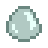

Slime
| Slime | |
|  | |
| A shimmering, gelatinous glob with no smell. | |
| Information | |
| Source | Slimes • Krobus • Slime Ball • Traveling Cart • Fish Pond |
| Sell Price | |
- This page is for the item drop. For the monster from which this item drops, see Slimes.
Slime is a Monster Loot item which is dropped by Slimes. Killing a single Slime can drop up to two Slime. Slime can also be obtained from Slime Balls or purchased from Krobus for  10g on Mondays (up to 50 per Monday). It may randomly appear in the Traveling Cart for
10g on Mondays (up to 50 per Monday). It may randomly appear in the Traveling Cart for  100–1,000g. A Slimejack Fish Pond may also produce 10, 30, or 50 Slime daily when the population reaches 9.
100–1,000g. A Slimejack Fish Pond may also produce 10, 30, or 50 Slime daily when the population reaches 9.
Gifting
| Villager Reactions
| |
|---|---|
| Dislike | |
| Hate | |
Bundles
99 Slime are one option for the Adventurer's Bundle in the Boiler Room.
Recipes
| Image | Name | Description | Ingredient | Equipment | Time | Sell Price | ||||
|---|---|---|---|---|---|---|---|---|---|---|
| Slime Egg | Can be hatched in a slime incubator. | Slime Egg-Press |
|
The color of the resulting slime egg is random, but the cheaper ones are more common. See Slime Egg-Press for the list of probabilities.
Crafting
| Image | Name | Description | Ingredients | Recipe Source |
|---|---|---|---|---|
| Oil Maker | Makes gourmet truffle oil. | Farming Level 8 | ||
| Cork Bobber | Slightly increases the size of your "fishing bar". | Fishing Level 7 | ||
| Slime Incubator | Hatches slimes eggs into slimes. Allows you to raise slimes outdoors. | |||
| Wild Bait (5) | A unique recipe from Linus that gives you a chance to catch two fish at once. |
| ||
| Sturdy Ring | Cuts the duration of negative status effects in half. | |||
| Monster Musk | Spray this on to draw more monsters out of hiding. |
Tailoring
Slime is used in the spool of the Sewing Machine to create a Shirt.
Quests
- 20 Slime are requested by Slimejack in a Fish Pond quest to increase the capacity of the pond from 1 to 3.
- 5 Slime may be requested by Bullhead or Largemouth Bass in a Fish Pond quest to increase the capacity of the pond from 3 to 5.
- 99 Slime may be requested by the Raccoon at the Giant Stump as part of his fifth request, or as part of any request starting with the sixth.
History
- 1.4: Sturdy Ring now uses 25 Slime to craft. Slime can now be used in Tailoring. Can be requested in Fish Pond quests. Can be produced by Fish Ponds.
- 1.5: Added Monster Musk recipe.
- 1.6: May now be requested by the Raccoon. Is no longer a possible Midnight Carp Fish Pond request.
| Animals and Produce | |
|---|---|
| Coop | Chicken (Egg • Large Egg • Brown Egg • Large Brown Egg) • Dinosaur (Dinosaur Egg) • Duck (Duck Egg • Duck Feather) • Golden Chicken (Golden Egg) • Rabbit (Wool • Rabbit's Foot) • Void Chicken (Void Egg) |
| Barn | Cow (Milk • Large Milk) • Goat (Goat Milk • Large Goat Milk) • Sheep (Wool) • Ostrich (Ostrich Egg) • Pig (Truffle) |
| Fish Pond | Fish (Roe) |
| Slime Hutch | Slimes (Slime • Slime Ball • Slime Egg) |
| Other | Cat • Dog • Horse • Turtle |